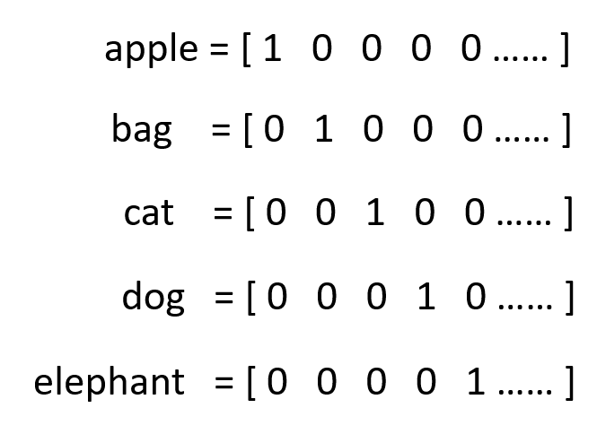
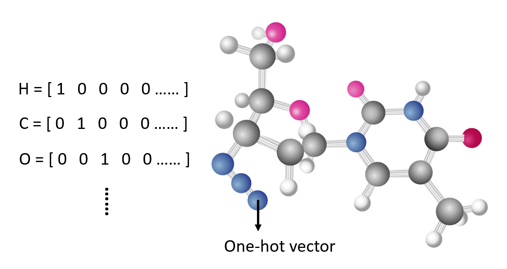
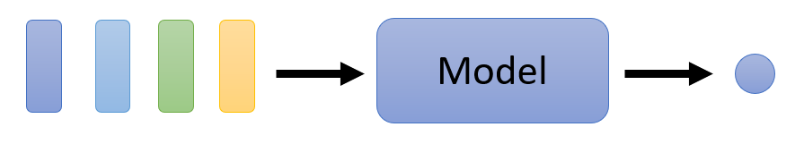
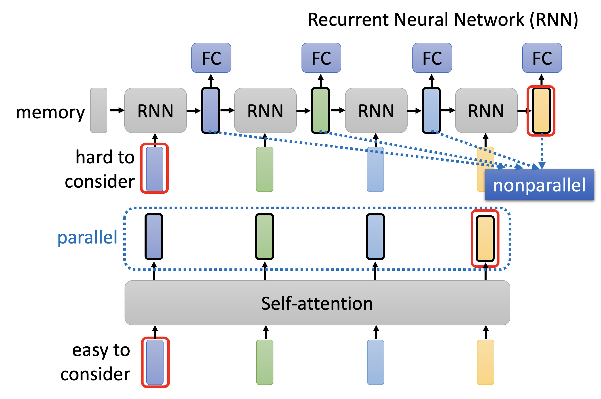

Self-Attention⚓︎
约 6118 个字 预计阅读时间 31 分钟
之前我们介绍的模型，都只是将一个向量作为输入（比如 COVID-19 感染人数预测、图像处理等问题

Inputs and Outputs⚓︎
首先需要考虑的一个问题是：如何将实际问题的输入转化为一组向量的形式呢？来看下面几个例子：
例子
一个句子就是一个向量序列，而句子中的每个单词对应一个个的向量。将单词转化为向量的方式有：
-
独热编码(one-hot encoding)：假如所有单词的个数为 n，那么我们就用一个大小为 n 的向量来表示每个单词，每个位置上的元素表示唯一的单词
-
这种方式简单粗暴，但是不仅占用内存空间大，而且无法体现出两个单词之间的联系，即没有考虑到语义信息

-
-
词嵌入(word embedding)：语义关系越接近的两个单词，它们对应的向量值会更加接近，如下图所示：

在机器学习课程 HW2 中，我们将语音看作一段段的帧（25ms 的语音

我们可以将图上的每个节点看作一个向量，所以整张图就是一组向量。在实际应用中：
-
社交网络：

-
分子结构

而输出的内容则可以分为以下几种情况：
-
每个输入向量对应一个输出标签 (label)（即预测值）
例子
-
对于整组向量，输出一个标签
例子

-
由模型决定输出标签的数量（seq2seq，序列到序列）

不过之后我们只专注第一种输出情况，即对于 N 个向量的输入，输出相应的 N 个标量或类。
Self-Attention⚓︎
接下来考虑如何构建适用于向量序列输入的模型。
Naive Idea
既然 N 个向量输入对应 N 个输出，那么不妨让每个向量单独进入一个全连接层得到一个输出，如下图所示：

显然，这样有一个很大的缺陷：我们没有考虑到向量序列各个向量之间的联系，各个向量都是“各自为政”的。所以，如果有两个向量的值是相等的，那就会被视为意义相同的两个东西，从而产生两个相同的输出。
每个向量输入都有一个对应的全连接层，这个全连接层不仅应该接收对应的向量输入，同时也要顾及整个上下文(context) 中的向量。
-
这个上下文的范围可以是一个局部的窗口，这样就仅考虑与对应输入向量相邻的部分向量

-
也可以将整个向量序列都纳入考虑范围内，这样考虑得更全面些，比如用一个固定大小的窗口覆盖整个向量序列
- 但是向量序列的长度可长可短，所以不能简单地使用窗口来实现这一点
- 再说，就算有一个足够大小的窗口可以容纳所有向量，但是这样也意味着全连接层需要非常多的参数（\(n\) 个向量就会产生 \(n^2\) 个参数
） ，而过多的参数意味着很容易出现过拟合的问题
因此，这里引入一种更好的做法——使用一种名为“自注意”(self-attention) 的机制：
- 将输入向量送入全连接层之前，先让这些向量经过一种“自注意”的运算。对于每个输入向量，经过“自注意”运算后都会得到一个对应的输出，我们可以把这个输出看作是包含整个向量序列上下文信息的新向量，但同时也保留了原来输入向量的特征。
- 然后将这个新向量传给全连接层进行训练
这一过程如下图所示：

当然，在多层神经网络中，可以在每两个隐藏层之间塞一个自注意计算：

在自注意计算这个“盒子”的内部，输入和输出的关系如下所示：
其中输入既可以是最外面的向量序列，也可以是经过几层训练后得到的输出向量序列。现在我们就考虑某一个输出向量，比如 \(\bm{b^1}\)，来认识一下自注意的计算过程。
首先，我们要计算 \(\bm{b^1}\) 对应的输入向量 \(\bm{a^1}\) 与其他输入向量的相关程度（用 \(\alpha\) 表示

注
下面我们会将主要考虑的输入向量称为查询(query)，而把另外的向量看作键(key)，所以它们分别对应的矩阵为 \(W^q\) 和 \(W^k\)，与矩阵相乘的结果分别为 \(\bm{q}\) 和 \(\bm{k}\)。
- 点积(dot-product)：相关程度 \(\alpha = \bm{q} \cdot \bm{k}\)（向量的点积，得到一个标量）
- 加法 (additive)：将 \(\bm{q} + \bm{k}\) 的结果丢给 \(\tanh\) 函数计算，然后再经过一次转换（用矩阵 \(W\) 表示）得到 \(\alpha\)
下面我们仅考虑点积这一方法。
回到前面有 4 个输入的例子，先将 \(\bm{a^1}\) 作为查询，其他几个输入向量（也可以包括 \(\bm{a^1}\)）作为键，计算相关程度 \(\alpha_{1, j}\ (j = 1, \dots, 4)\)：
实际上，相关程度的值应该在 \([0, 1]\) 这一范围内，所以让这些相关程度值再经过一次 softmax 函数的运算，将它们的值映射到 \([0, 1]\) 上（用其他激活函数也没有问题

另外，对于每个输入向量，我们还要为它们计算第三个向量 \(\bm{v} = W^v \bm{a}\)，然后将这个向量与刚刚经过 softmax 得到的相关程度值相乘，再将这些乘积相加（加权和
剩下的 \(\bm{b^2}, \bm{b^3}, \dots\) 等输出向量可以一起计算计算（并行计算
现在我们从矩阵的角度研究一般情况下的计算过程：
-
对于每个输入向量 \(\bm{a^i}\)，需要得到三个向量 \(\bm{q^i}, \bm{k^i}, \bm{v^i}\)，而这些向量分别通过三个矩阵 \(W^q, W^k, W^v\) 和 \(\bm{a^i}\) 相乘得到。与其让矩阵分别和单个的输入向量相乘，不如将这些向量拼在一起，形成一个矩阵，这样就将多次的矩阵 \(\times\) 向量的运算转化为一次的矩阵 \(\times\) 矩阵的运算，如下所示：
-
我们知道，计算相关程度 \(\alpha\) 的过程是一个向量乘法，但是我们也可以将其转化为一个矩阵乘法，一次性算出所有的相关程度值
-
先将所有的 \(\bm{k}\) 拼在一起，一次性计算某个查询下的所有相关程度：
-
然后将所有的 \(\bm{q}\) 拼在一起，这样就可以将所有的相关程度一次性算出来了！

-
-
同理，将所有的向量 \(\bm{v}\) 拼在一起，与相关程度构成的矩阵 \(A'\) 相乘，得到所有的输出向量：

综上，整个自注意的计算过程可以抽象为以下一系列的矩阵运算：

其中三个矩阵 \(W^q, W^k, W^v\) 是我们需要通过训练学习的参数。而由相关程度构成的（且经过 softmax 归一化处理后的）矩阵称作注意矩阵(attention matrix)。
Multi-head Self-Attention⚓︎
对于那些需要学习的参数 \(\bm{q}, \bm{k}, \bm{v}\)，我们可以将同一个参数拆成多份（即“多个头”(multi-head)，通过原参数 x 不同的矩阵得到
下面以第 \(i\) 个输入 \(\bm{a^i}\) 为例介绍输出 \(\bm{b^i}\) 的计算过程。先算出第一个头对应的输出 \(\bm{b^{i, 1}}\)：

然后算出第二个头对应的输出 \(\bm{b^{i, 2}}\)：

最后将这 2 个向量拼起来，乘上某个矩阵 \(W^O\) 后，就能得到完整的输出 \(\bm{b^i}\) 了：

Positional Encoding⚓︎
自注意机制的一个缺陷是：没有考虑位置信息，比如输入序列中第 i 个和第 j 个向量无论它们之间距离多远，都不会影响到它们在自注意机制中的计算结果。但有时候我们希望将这些位置信息考虑在内，比如在做词性标记的时候，我们知道动词一般不会出现在句首，这就是个值得考虑的位置信息。所以这里引入了一种叫做位置编码(positional encoding) 的技术——它会为每个输入向量设置一个唯一的位置向量 \(\bm{e^i}\)，在进入自注意计算前，将其和输入向量 \(\bm{a^i}\) 相加，这样自注意计算时就将位置信息考虑进去了。
下图展示了一种可行的位置向量序列（这也正是经典论文 Attention Is All Your Need 中最早用到的位置向量

上面的位置向量是人为设定的(hand-crafted)——其实还可以通过数据训练出位置向量，下面就是一些典型的例子：
注意，这里的图需要横着看，也就是说一行表示一个位置向量。
Applications⚓︎
自注意机制被广泛应用在 NLP 中，而且我们熟知的 Transformer 和 BERT 中也用到了自注意。下面来认识一下常见的应用！
Speech⚓︎
在语音识别中也可以用自注意机制，但是存在一个问题：正如前面提到的，我们会把一段 10ms 的语音当做一个向量，那么随便将一两句话，这个输入序列的长度 \(L\) 就大到吓人；而且注意矩阵 \(A'\) 的规模是 \(L \times L\) 的，甚至大到无法被内存容纳。
所以我们采取一种改进手段，叫做截断自注意(truncated self-attention)。简单来说就是：对于某个输入向量，我们仅考虑那些和当前输入向量比较接近的向量作为键，不去考虑更远的向量。在语音识别中，这种做法是合理的，因为要识别一句话中的一个字，我们往往无需得知整个段落的内容，也许仅靠这一句话甚至半句话就能判断出来了。
下面就是一个简化的示意图：

Images⚓︎
图像除了能用 CNN 来训练外，也可以用自注意来训练。我们可以将一张图像看作是一个向量集，而每个像素点就是一个向量，每个通道就是向量的元素。
下面就是一些具体的应用：
Graphs⚓︎
自注意 + 图 = 图神经网络(graph neural network)
这里利用了图的信息，尤其是边的信息。我们仅考虑有边相连的两个节点对应的注意矩阵上的元素（蓝色方框
Comparison⚓︎
Self-Attention v.s. CNN⚓︎
上图中，黄色方框对应的是 CNN 的感受野，而红色方框对应的是自注意的查询和键。我们不难发现：
- CNN 是一种只考虑感受野范围内的自注意机制，即 CNN 是一种简化的自注意机制。
- 自注意机制是一种感受野范围更大（按 PPT 说法是可学习的 (leanable)）的 CNN，即自注意机制是一种复杂版本的 CNN。
用维恩图可以形象表示两者的关系：

由于自注意机制会考虑更多的输入，因而更加灵活，所以在数据不多的情况下更容易出现过拟合现象，效果就不如 CNN 了；而一旦数据量大到一定程度后，自注意机制的优势就显现出来了。

下面这篇论文详细介绍了两者的关系，感兴趣的同学可自行上网搜索：

Self-Attention v.s. RNN⚓︎
目前循环神经网络(recurrent neutral network, RNN) 基本上能被自注意机制给替代了，所以这里就简单介绍一下 RNN 的机制：
- 底下 4 个小矩形就是输入，最开始会有一个初始内存
- 将这块内存和第一个输入向量一同放到 RNN 中，得到一个输出（中间用黑框包裹的矩形
） ，该输出可进入 FC（全连接层）的训练中。 - 这个输出将和第二个输入向量一同放到 RNN 中，得到下一个输出，该输出也会进入 FC（全连接层）的训练中。之后就以此类推下去，故不再赘述。
对应的自注意机制示意图为：

RNN 的劣势
-
难以考虑太远的输入向量：虽然我们可以将 RNN 改为双向的（这样的话输出向量都能包含任意输入向量，而不是像图示那样只能考虑左侧的输入向量
） ，但相比自注意机制能一次看透所有输入的能力，读取较远位置的输入向量还是有些差劲的。
-
无法并行：其实解释和前面的差不多，就是 RNN 需要一个个看输入，不能并行加速；而自注意能通过并行一次看完所有输入，所以效率之间有着很大差别。

正因为这些劣势，那些采用 RNN 的应用开始改用自注意机制了。
Variants⚓︎
前面介绍的都是一般的自注意机制技术，实际上后人们在此基础上设计出各种“魔改版本”，想要在确保不影响表现的同时提升效率。下面我们就来认识这些各式各样的自注意机制变体吧！
Skipping Some Calculations with Human Knowledge⚓︎
先来回顾一般的自注意机制：假如序列长度为 \(N\)，那么中间产生的查询和键的数量也是 \(N\)，而查询序列和键序列相乘得到的注意矩阵的规模就是 \(N \times N\) 的了。
另外，我们还有以下发现：
- 自注意机制只是整个网络中的一个模块
- 当 \(N\) 很大时，自注意机制决定了整个的计算量
- 上一点通常体现在图像处理等任务中
- 比如有一张 256x256 的图片，那么 \(N = 256 \times 256\)，注意矩阵就有 \(256^4\) 个元素，足以体现计算量之大
第一种提升计算效率（或减小计算量）的思路是利用我们人类已有的知识来避免不必要的计算。下面给出一些具体的方法。
Local Attention/Truncated Attention⚓︎

- 注意矩阵中灰色方块对应的元素直接置 0，不去计算；蓝色方块对应的元素需要计算注意权重
- 该方法的思路是：输入向量只看相邻的 2 个向量，其他向量就不去管它
- 思路上和 CNN 类似
- 该方法能够加快计算速度，但不一定能给出非常好的结果
Stride Attention⚓︎
- 类似前一种方法，但是看的是跳过几个向量后的向量
- 跳过的步幅可以根据任务需求自行调整
Global Attention⚓︎
全局注意(global attention) 的思路是：
-
在序列中设置一类带有特殊记号的向量
-
可以给原向量做特殊标记（上图
） ，也可以插入带有这种特殊记号的新向量（下图）
-
-
这些特殊向量会考虑序列中所有的向量，因而掌握了全局信息
- 其他向量也会考虑所有的特殊向量，从而得知全局信息
- 一般向量就不会考虑其他一般向量
例子
不难看出，序列中的前两个向量带有特殊记号。
上述这些方法并不互相排斥，实际上可以一起使用（小孩子才做选择，我全都要！
Focusing on Critical Parts⚓︎
上面通过人类知识简化计算的思路不一定给出最好的结果，所以我们来看另一种思路：对于一个已有的注意矩阵，每个元素的值有大有小。我们决定：
- 对于较小的值，直接设为 0，因为它们的影响不大，可以忽略
- 所以计算时只关心较大的值
那么，接下来的问题就是：如何快速评估较小注意权重的占比呢？下面介绍一些相应的技术。
Clustering⚓︎
注
Reformer 和 Routing Transformer 用到了这类技术。
聚集(clustering) 技术的步骤如下：
-
基于查询和键的相似性分成多个集群 (cluster)
- 该步一般采用近似方法来做，计算量不会很大
- 下面的例子就是将查询和键划分成 4 个集群
-
在注意矩阵中，我们只计算那些位于同一集群中的查询和键的乘积，不同集群的就不去计算，直接置 0 就好了

Learnable Patterns: Sinkhorn Sorting Network⚓︎
到目前为止，所有的技术都是基于人类知识来实现的，但实际上还可以通过机器学习，让模型自己决定哪些注意权重需要计算，哪些可以忽略。有一种叫做 Sinkhorn 排序网络(Sinkhorn sorting network) 的技术便能做到这一点。
大致思路如下：
- 输入序列的每个向量会经过一个神经网络，得到一组规模和注意矩阵一致的向量，这组向量会转化成要求的注意矩阵
- 然而注意矩阵的注意权重只有 0 和 1（离散的
） ，而刚刚得到的那组向量是连续的，因此需要做进一步的处理 - 这个处理过程正是原论文探讨的重点，这里不会细讲，感兴趣的读者可以网上搜索阅读
- 由于通过神经网络得到的向量组是可微分的，因此可以通过训练提高精度
- 实际上在原论文中，多个输入向量会共用一个经过神经网络得到的向量，从而减小计算量
- 但这样得到的向量组规模就比注意矩阵小了，因此在转化时还要“放大”这个向量组，使得规模匹配的上
Reducing Number of Keys⚓︎
现在来思考一下：我们是否真的需要一个完整的注意矩阵吗？Linformer 这篇论文探讨了这个问题，发现注意矩阵的秩(rank) 并不大，也就是说不少列是相互依赖的，是冗余的，那么我们可以尝试将这些多余的列删掉，从而减小计算量。

注意矩阵的列对应的是键，所以我们从原来 \(N\) 个键中挑出一些具有代表性的键出来，共计 \(K\) 个。相应地，值的数量也要从 \(N\) 降至 \(K\) 个。
思考
能否减小查询的数量？
视情况而定。首先要注意的一点是：查询的数量决定了输出的数量。
- 有些任务（比如分类）可能只需要一个输出，这时可以尝试减小查询数量
- 但有的任务要求每个输入都要有对应的输出，那么不应该改变输出长度，此时就不得减小查询数量
那么具体该如何减小键的数量呢？下面给出一些方法：
- 压缩注意(compressed attention)：
- 采用 CNN，对整个序列扫描一遍，从而找出代表性的限量，缩短了序列长度
- Linformer：
- 将 \(N \times N\) 的注意矩阵和一个 \(N \times K\) 的矩阵相乘，从而得到让键的数量降至 \(K\) 个
- 实际上实现了 \(N\) 个向量的线性组合(linear combination)

Changing the Order of Matrix Multiplication⚓︎
回顾一下：从数学层面上看，自注意机制本质上就是在做下面这样的矩阵乘法。
将最后一个矩阵乘法展开，我们发现实际上做的是一个三矩阵的乘法：

在 ADS 中，我们讨论过：选择适当的矩阵乘法顺序有时可以显著降低计算量（甚至能减小好几个量级

上图是原来的矩阵乘法，时间复杂度是 \(O(N^2)\) 的；下图就是改变顺序后的乘法，可以看到时间复杂度降至 \(O(N)\)。显然我们会采用下面这种乘法顺序，那么具体该怎么做呢？我们就从其中某个输出向量 \(\bm{b}^1\) 来分析——其计算公式为（用到了 softmax
继续展开这个计算公式：
-
第一行到第二行，我们用了这样的公式： $$ \exp(\bm{q} \cdot \bm{k}) \approx \varphi(\bm{q}) \cdot \varphi(\bm{k}) $$
其中 \(\varphi()\) 是一个接收向量，输出也是向量的转换函数（暂时不用管具体是什么）
-
对于最后一行公式中的分母部分，还可以进一步转化为： $$ \varphi(\bm{q}^{\textcolor{green}{1}}) \cdot \sum_{\textcolor{cornflowerblue}{j}=1}^N \varphi(\bm{k}^{\textcolor{cornflowerblue}{j}}) $$
这实际上是一个向量乘法：

黄色部分就是 \(\sum_{\textcolor{cornflowerblue}{j}=1}^N \varphi(\bm{k}^{\textcolor{cornflowerblue}{j}})\)，而红色则对应 \(\varphi(\bm{q}^{\textcolor{green}{1}})\)
-
再来看分子部分（下图蓝框框出来的公式
） ，我们可以像这样展开 >字太多了，不想打 \(\LaTeX\) 公式了，所以就直接贴个截图...用矩阵表示最后一行的式子（注意查询向量是 \(M\) 维的
） ： -
同时考虑分子分母，现在 \(\bm{b}^1\) 的计算变成了多个向量的乘除法了

上面这种处理的好处是：图中灰色方框和黄色方框对应的部分仅需计算一次，之后计算输出向量时就可以复用这些结果，从而减小计算量。

其中灰色方框内的 \(M\) 个向量（蓝色方块）称为模板(template)。

关于函数 \(\varphi()\) 的具体实现，可以参考以下几篇 paper：
Synthesizer⚓︎
我们还可以再脑洞大开一点——计算自注意的时候一定要先算出查询和键吗？一种称为合成器(synthesizer) 的技术就跳过这个步骤——它的注意权重作为网络参数，是从模型中学出来的（和 Sinkhorn 排序网络很像

Attention-free Techniques⚓︎
更进一步思考——处理序列的模型非要用到自注意机制吗？下面是一些尝试丢掉自注意机制的方案：

评论区